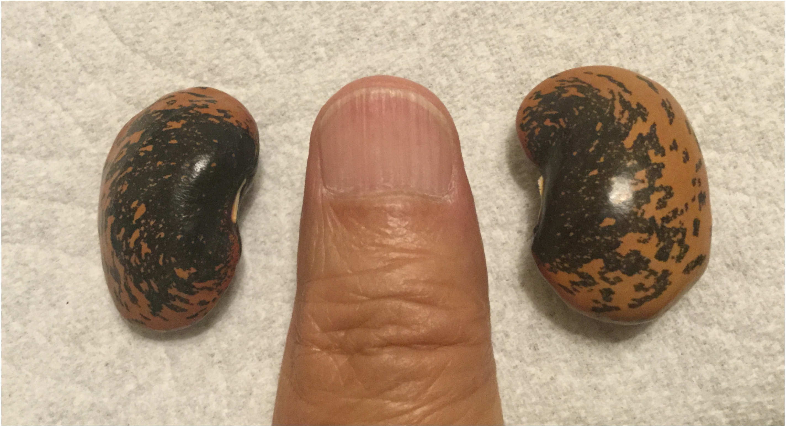
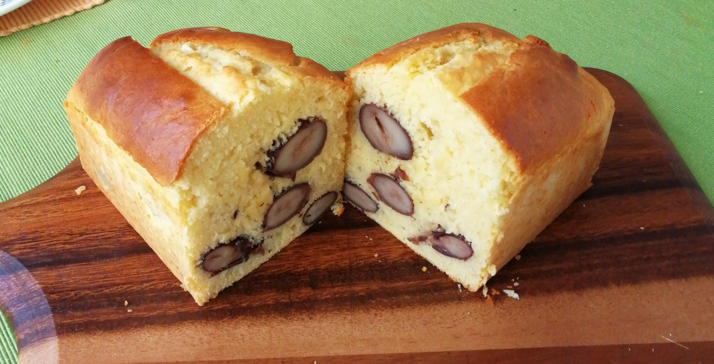
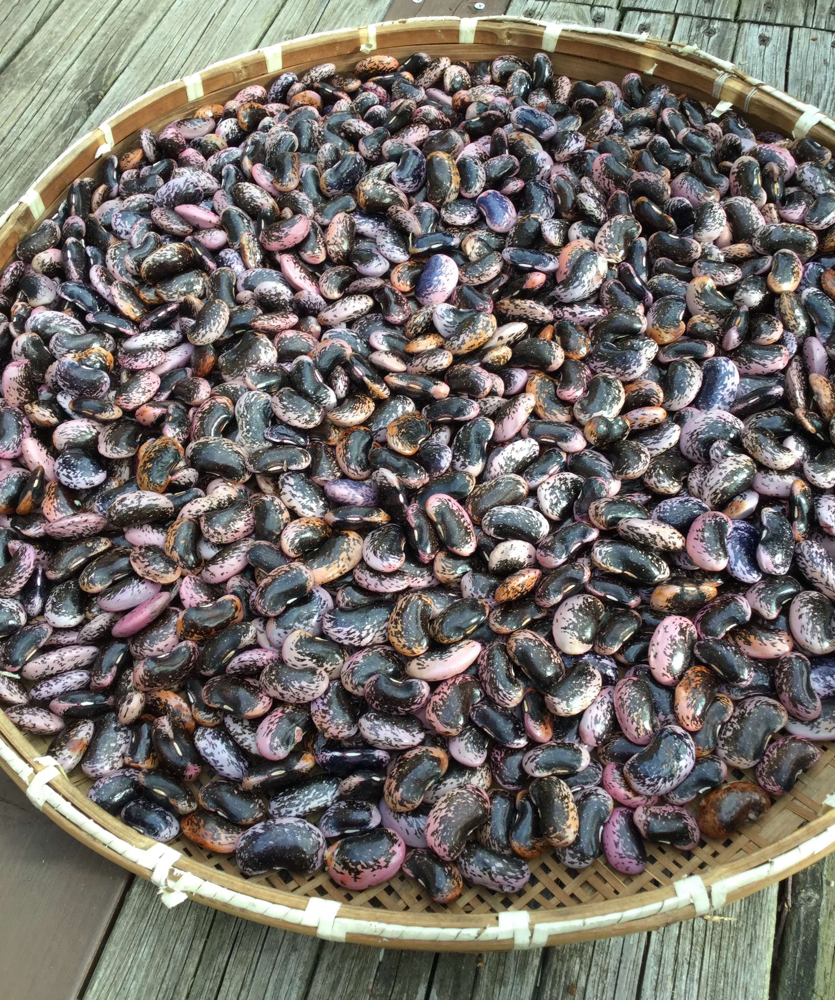

ムラサキ花豆のひと口メモ
目次
1 ムラサキ花豆（ベニバナインゲン）
「豆好き」の方ならムラサキ花豆のことをよくご存知ですが、 全国民にあまねく知られているというレベルには達していません。
ボクの生まれ故郷の広島県の方に差し上げると、みなさんから 「見たことない」「どうやって食べるの」と聞かれます。
初めて目にするとその大きさにびっくりされる方が多いようです。 花豆は乾燥させた状態でも大人の 親指第1関節 までの大きさがあります（図1）。

図1: 乾燥した花豆と親指
煮豆にすると、さらに数十%も膨張します:sunglasses:
花豆の原産地はメキシコ高原でわが国には江戸末期に伝来しました。当時は朱色で大きな花を楽しむ 観賞用 だったようです。 食用栽培は明治になって 札幌農学校 (注1)で始まったとのことです。
本州では標高が1,000メートル以上の冷涼な場所でないと実はつきません（花は咲きますが）。
1.1 食べ方
煮豆 にして食べるのが一般的ですが、甘納豆のようにしてお茶請けにするとか、 赤飯 の中に入れる地方もあるようです。
洋風の食べ方だと、図2のようにパウンドケーキに入れて焼いても美味しいです。

図2: 花豆ケーキ
ちょっと変わったところでは白インゲンの代わりに使って カスレ (フランス風煮込み料理)にもできます。 コンポート にするとフレンチのデザートにもなります(注2)。
なお、農業生物ジーンバンク によれば世界中ではつぎのように利用されているそうです。
温帯の国では，柔らかい若莢をスライスして料理に使われることが多い (Purseglove,1974)。中央アメリカでは未熟，完熟種子を食べるほか，塊根を茹でて食べることもある。時に，鑑賞用として栽培される。
1.2 種まき
豆を平らな面に並べて厚みのある（＝丸みがあって大きい）ものを選んでタネにします。 かつては北群馬では花豆は 直植え でいきなり畑に植えるのが一般的でした。 しかし最近は、発芽したての双葉のときに シカ や カモシカ に食われる頻度が高くなっています。若芽をやられると苗は100%枯れてしまいます。害獣からの 食害 を避けるために、7,8年ほど前からポットで育苗するようにしています。
タネをポットにまくときには豆の ヘソを下 にして、親指と人差し指でつまんで人差し指第2関節まで押し込みます。その後かるく転圧すると覆土はおよそ３cmほどになります。
時期的には、例年ゴールデンウィーク明けの5月10日前後に 横浜 で10cmのポットに1粒ずつまきます。横浜で育苗する理由は、花豆が発芽するには播種後の 蓄積温度 が140℃に達することが必要（有馬,1989）とされていることから、温暖な地域で育苗すると発芽を早めることができるからです。この蓄積温度＝140℃については2020年に自分なりに実際に確認しました（こちら）。140℃に達すると多くのタネが発芽しますが、発芽時期の 個体差 は大きく発芽同時性は低いようです。それでも2週間ほどでほぼ発芽が揃います(注3)。
1.3 その後の成長は「ジャックと豆の木」
育苗日数はおよそ 20日 、5月末には北群馬の畑に定植します。播種後１ヶ月でツルの先端は 大人の背丈 ほどになります。 苗の株間距離を1メートルにしてもあっという間にトンネルのネットに隙間なくツルが巻き付いてきます。成長の速さには毎年驚かされます。
1.4 花豆の敵
ある程度大きくなると幸いなことにシカもサルもイノシシも花豆に害を及ぼすことはありません(注4)。こわいのは生育初期の 霜害 。これにあたると苗はほとんど絶滅します。
あと、株元のマルチの下に アリ が巣を作るとやがてその株は枯れてしまいます。これまで市販のアリ駆除のエサをまいたりいろいろやりましたが、あまり有効なものは見つかっていません。ここ数年は、 コーヒのカス を乾燥させたものを巣の入り口や内部にまき散らす方法をとっています。これはかなり成功率が高いです。 しばらくするとアリの姿が消えます(注5)。
温暖化のためでしょうか、近年 秋の 台風 で花豆のトンネルが壊されることが時々あります。 収量が減るだだけではなく、トンネル支柱のパイプが折れたりひん曲がったりして経済的なダメージが大きいです。
1.5 収穫
図3は昨年9月に干しざるに広げて乾燥させているところ。この前に、サヤがついたままで日に当ててサヤがカラカラに乾くまで乾燥させます。

図3: 花豆の乾燥中
2 文献
- 岡部ほか(2019) 野辺山高原におけるベニバナインゲンの栽培方法に関する一考察
- 有馬(1986) ベニバナインゲンの栽培方法
3 Footnotes:
脚注:
「札幌農学校」は現在の北海道大学の前身。ちょっとプライベートに因縁を感じます:smile:
早めに発芽させたい事情がある場合には、播種の前に5,6時間真水につけるとか、豆の皮に傷をつけるとかの方法があるそうです。今年は前者の 浸種 (seeds soaking)をやってみようと思います。
花豆の実は生で食べると吐き気、嘔吐、下痢、腹痛等の消化器症状をおこします。毒性成分はレクチン（タンパク質）とのこと。獣害が無いのはこれと関係があるのでしょうか？
(参考資料)自然毒のリスクプロファイル：高等植物：ベニバナインゲン(厚生労働省)
芝生 にも大きな山アリが巣を作って困っていましたが、棒切れなどでコーヒカスを巣穴に入れ込むと効果があります。アリが死ぬわけではなくて、別の場所に移動するだけのようですので、他の場所に作られたらまたコーヒカス攻撃する感じです。2,3回やっているうちにあきらめて芝生から別の場所に行くようです。:wink: